[台中] 浪浪別哭 台中店
| 餐廳名稱: | 浪浪別哭 台中店 |
|---|---|
| 地 址: | 台中市南屯區干城街214巷1號 |
| 營業時間: | 週四 ~ 週二 11:00 - 20:30 |
| 週三 公休 | |
| 電話 : | 04 2254 7018 |
小時候養過貓，蠻喜歡貓的。無奈近期身體不好，目前不宜養貓。今天星期六，決定來一趟台中之旅， 美食餐廳 預約到一點入場，看看 GPS 預估11點就到了， 查了餐廳附近的 coffee shop ， 發現這間 浪浪別哭 中途之家，兼營餐飲，就決定過來嚕貓了。
這邊算黎明新村吧，附近停車略滿，繞一下還是有找到停車位，以台北標準這種停車是還不錯了，不知台中標準是不是不滿意。
走1分鐘到門口。之前已從網頁得知，一樓是狗區，二樓是貓區。接待我們之後，就客滿了，還好11點出頭就到了。

這是餐點製作區。必須在一樓點餐，才能拿信號器上二樓，等通知。 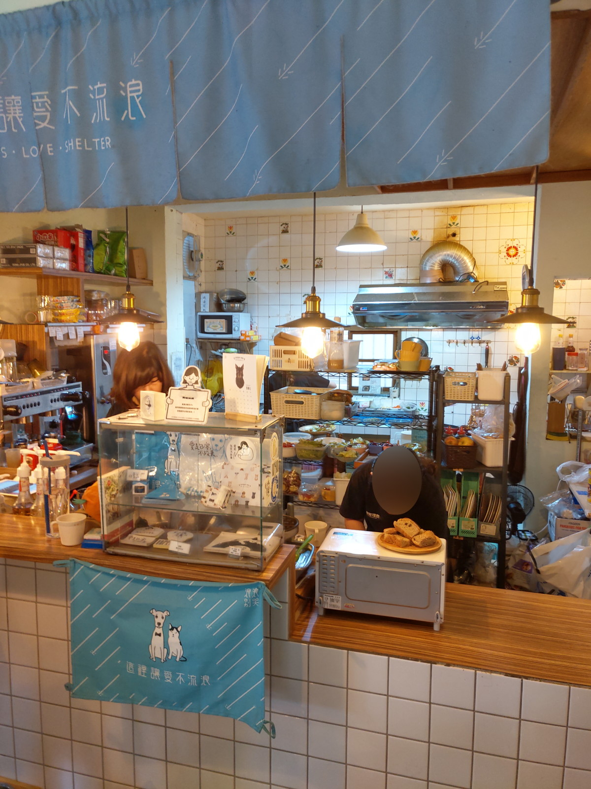
一樓的狗狗。好可愛。 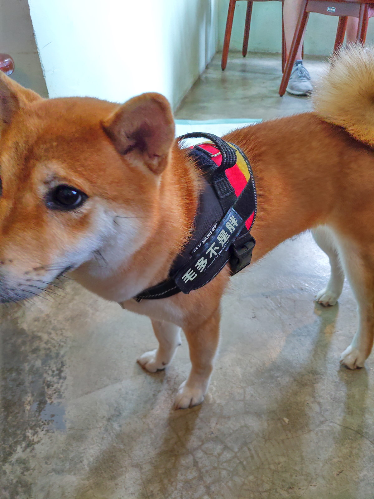 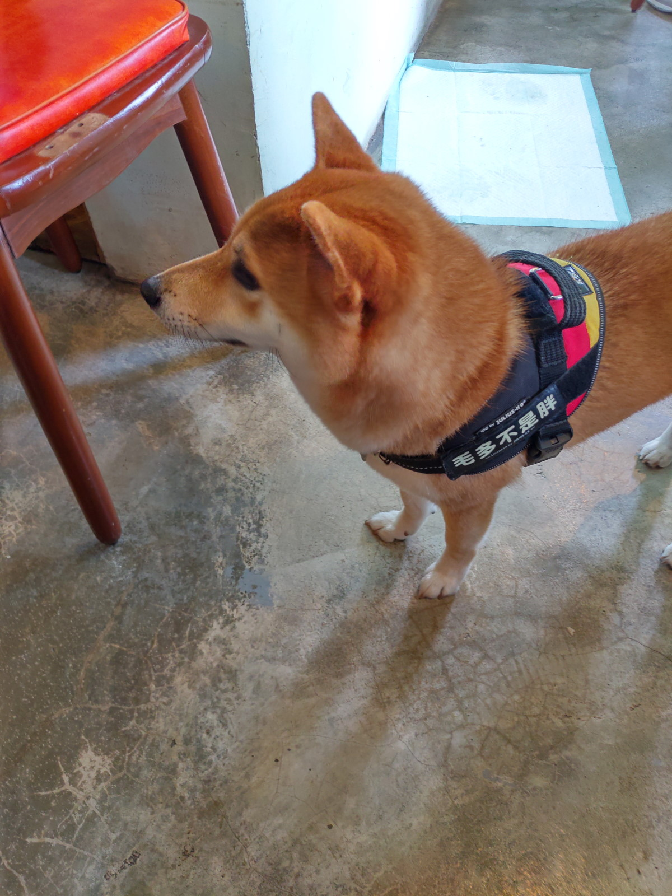 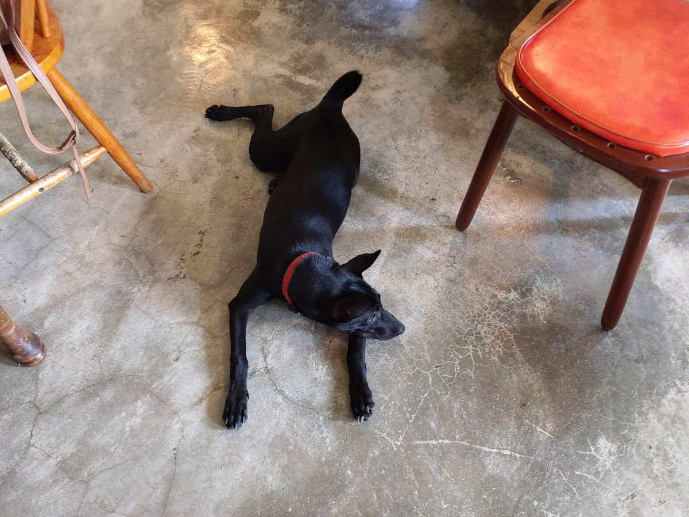
這是偷跑到一樓的貓，30分鐘後，被忙碌的老闆發現，抓到二樓小房間關禁閉。 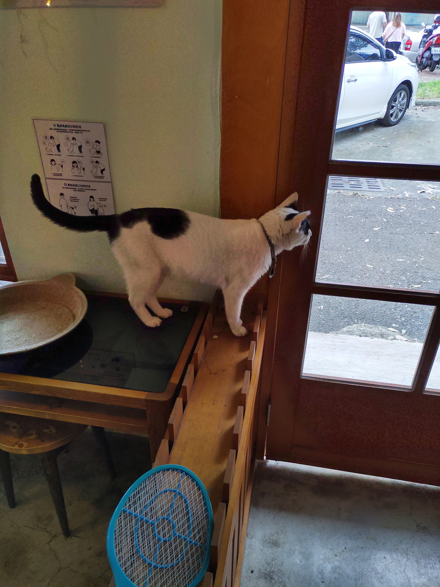 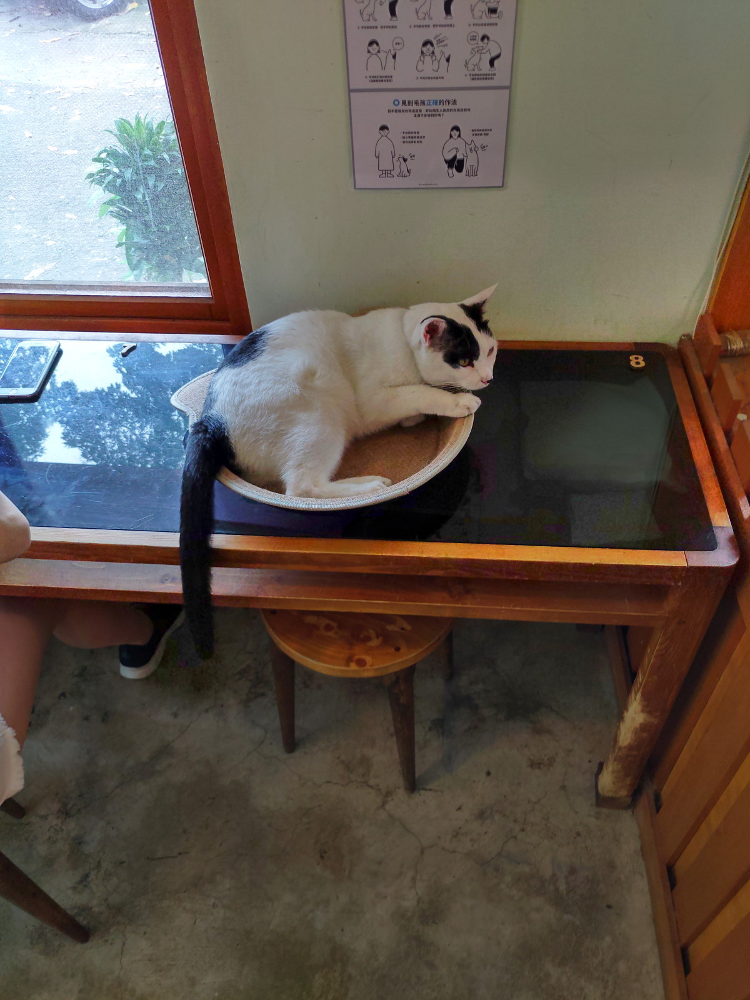
二樓的貓，竟然是小貓，親人程度 50分，沒有非常親人，但也不會逃走。 林口的 貓泰泰 Mao Thai Thai 餐不錯，可是都是老貓。 剛上二樓，很重的貓味，不大習慣，之前去 貓泰泰 20幾隻貓也沒這麼重的味道，其他只有兩三隻貓的店，就更不用說 沒這味道了。 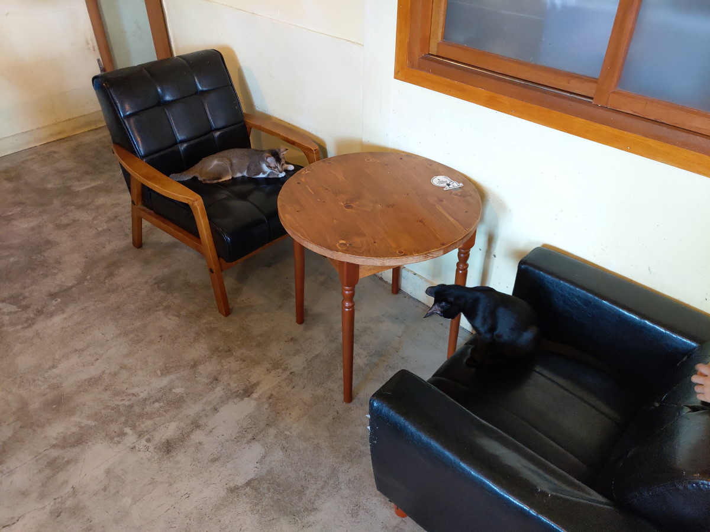 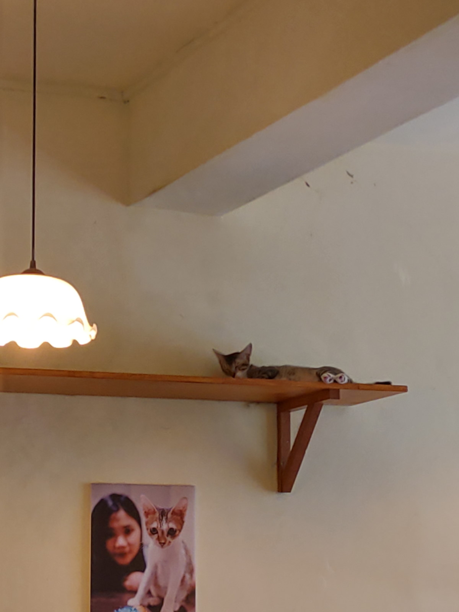
裡面的小房間 跟 外面的貓籠，都是禁閉室。也許還在治療中，或是不親人吧。貓籠上面的貓，是來探望玩伴的，也可能是嘲笑玩伴。 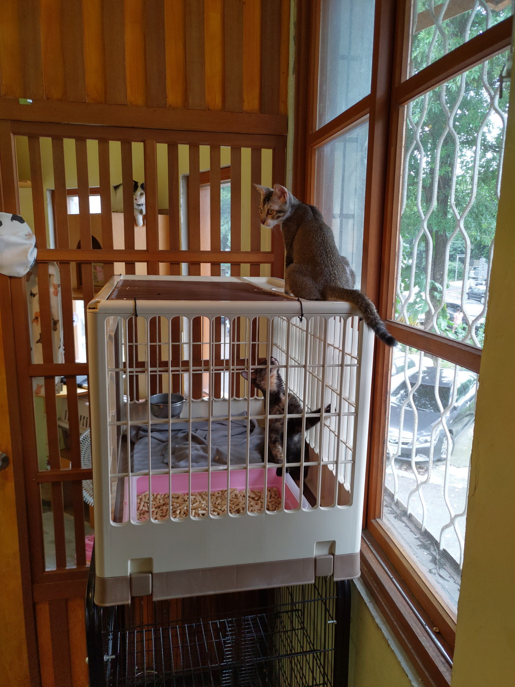
兩隻小貓玩樂式地扭打在一起。 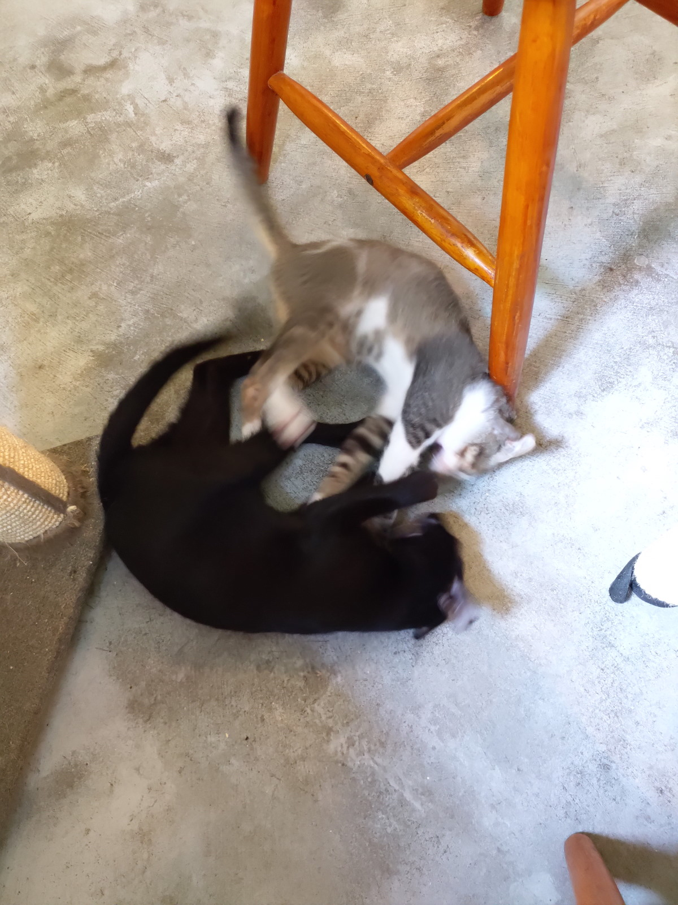
待會還要去優秀餐廳，所以只點三杯飲料，冰咖啡、冰奶茶、冰紅茶。口味自然是很平凡。不過看別人的餐 有煎雞排啥的，似乎比較好吃。但是這家店嚕貓才是重點，食物不重要。 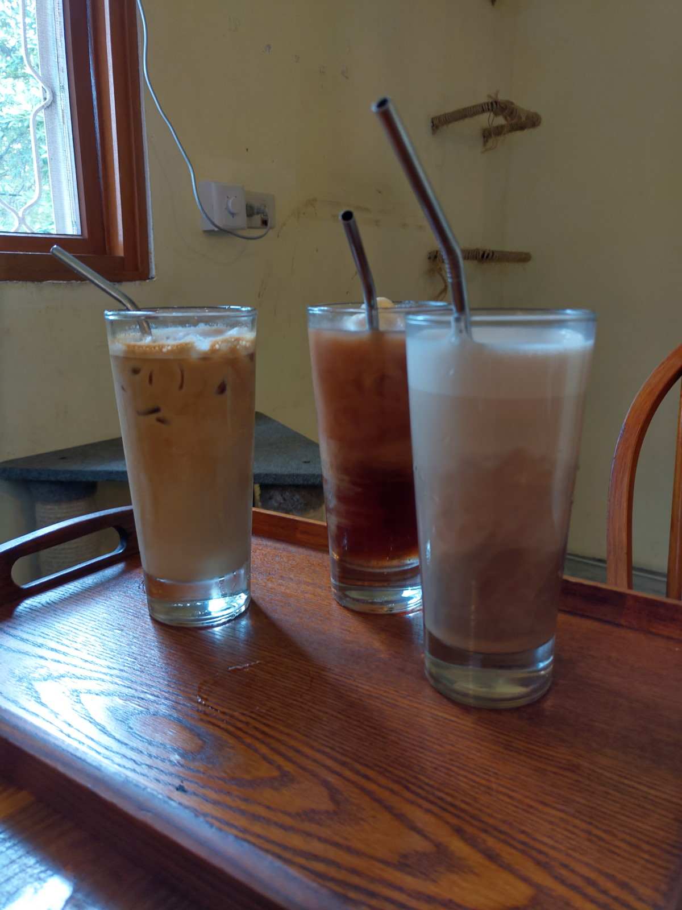
照顧貓其實也是一種負擔，少數人久了會累。所以 幫忙宣傳一下，要養寵物就要愛它一輩子，千萬不要棄養，好歹也要幫忙找新主人。 如果有一絲一毫無法做到，就到這種中途之家點個食物，玩一下就好了。 很高興看到這種能自負盈虧的慈善事業能夠成功，流浪貓狗能夠得救，也有注意TNR，這間餐廳還有台北店，喜歡貓狗的請多支持。